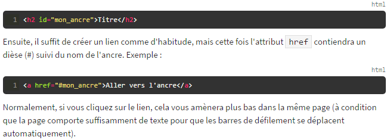

Section 1 - Un lien vers un autre site
Pour faire un lien, la balise que nous allons utiliser est très simple à retenir : ‹a› .Il faut cependant
lui ajouter un attribut, href, pour indiquer vers quelle page le lien doit conduire. pour créer un lien vers le site du Monde. Il faut
écrire le code suivant :
‹ a href="http://www.lemonde.fr/"› Le Monde ‹/a›
Ce qui donne Le Monde. Les liens que nous venons de voir sont appelés
liens absolus car on indique l'adresse complète.
Section 2 - Un lien vers une autre page de son site
Sous-section 1 - Deux pages situées dans un même dossier
Pour pointer vers une autre page du même dossier, il suffit d'écrire le nom du fichier avec son extension. Si le fichier pointé est biographie.html, on écrira
‹ a href="biographie.html"› Ma biographie ‹/a› soit :
Ma biographie
Sous-section 2 - Deux pages situées dans des dossiers différents
Pour pointer vers une autre page dans un dossier différent, il faut écrire le dossier/le nom du fichier avec son extension. Si le fichier pointé est biographie.html, on écrira
‹ a href="Biographie/biographie.html"› Ma biographie ‹/a› soit :
Ma biographie dans le dosier Biographie
Section 3 - Un lien vers une ancre
Sous-section 1 : Dans la même page
Une ancre est une sorte de point de repère que vous pouvez mettre dans vos pages HTML lorsqu'elles sont très longues.
En effet, il peut alors être utile de faire un lien amenant plus bas dans la même page pour que le visiteur puisse sauter directement à la partie qui l'intéresse.
Pour créer une ancre, il suffit de rajouter l'attribut id à une balise qui va alors servir de repère. Ce peut être n'importe quelle balise, un titre par exemple.
Utilisez l'attribut id pour donner un nom à l'ancre. Cela nous servira ensuite pour faire un lien vers cette ancre. Par exemple :

Ici un exemple concret sur une page :
Sous-section 2 : Dans une autre page